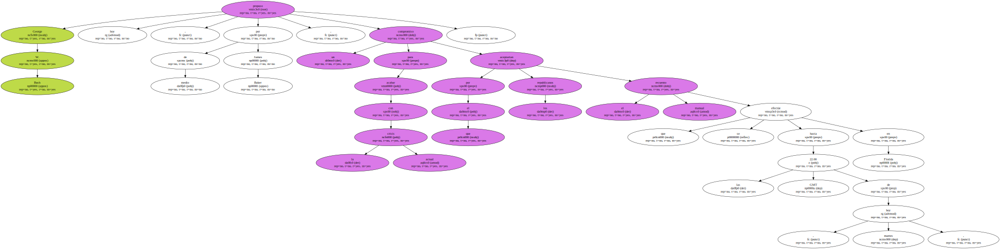
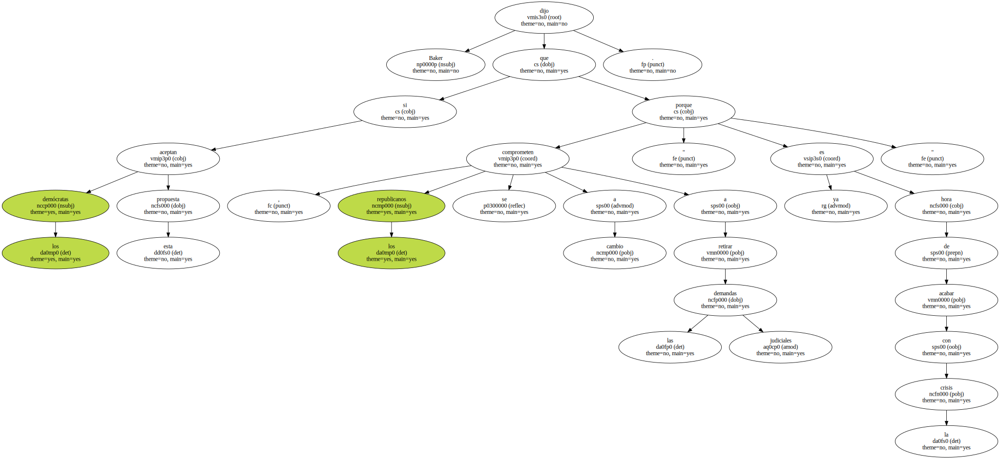
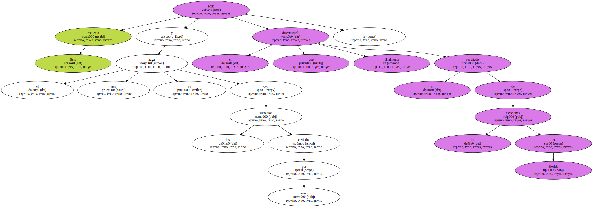
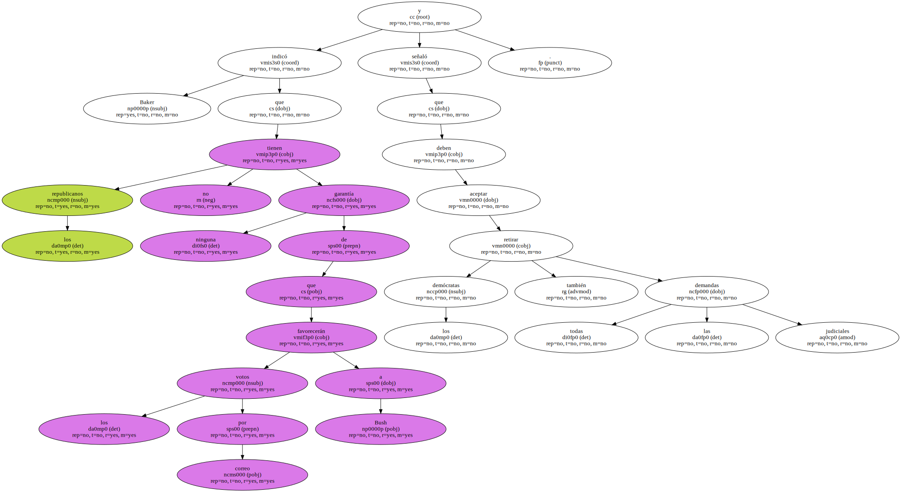
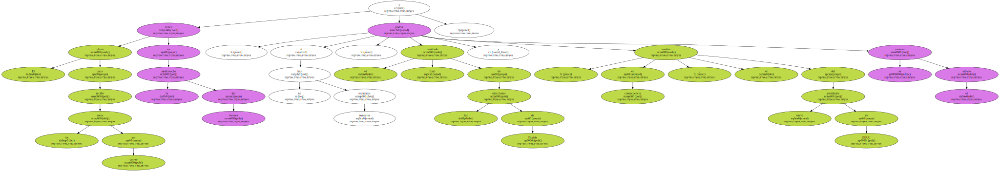
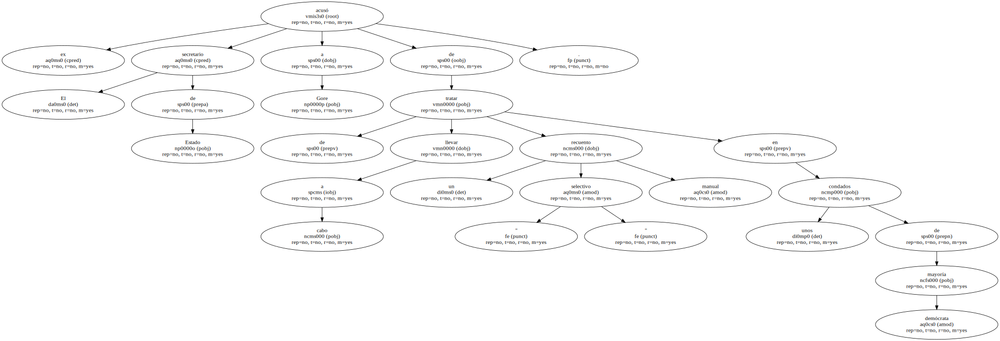
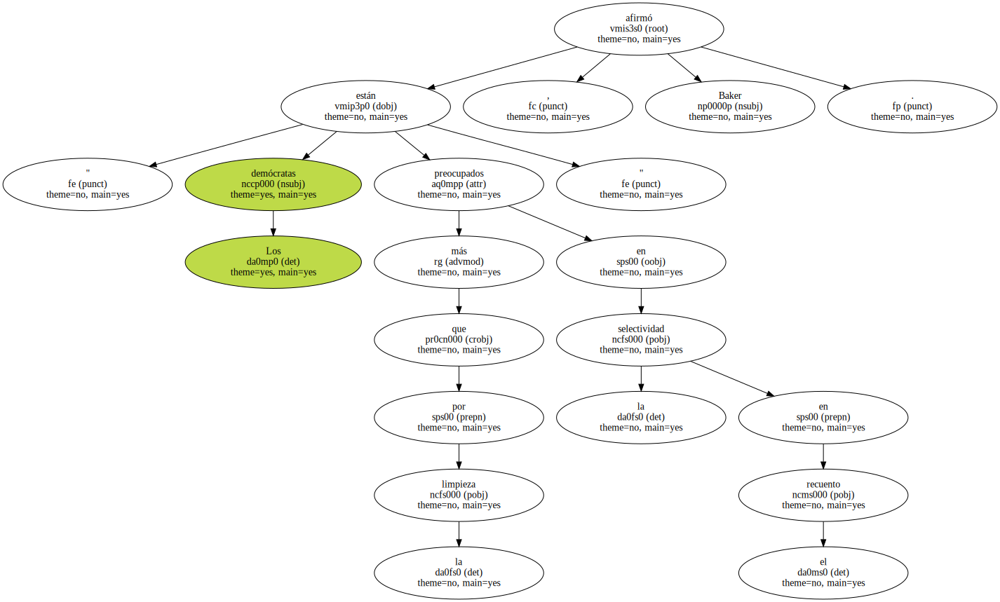
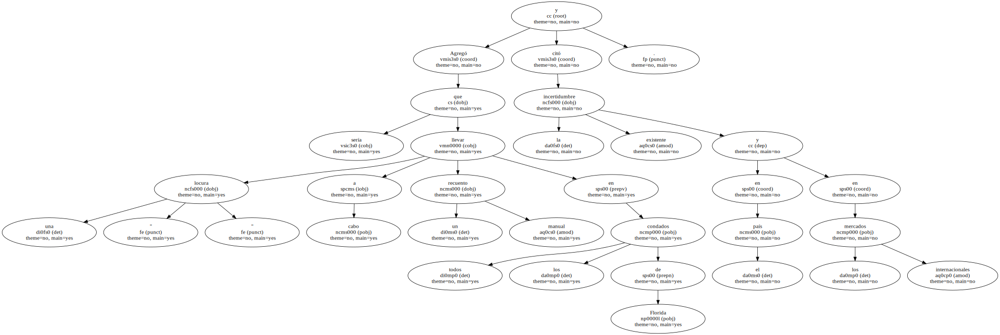
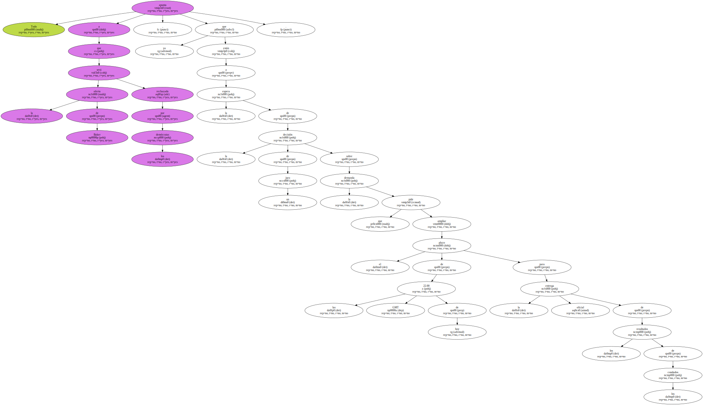
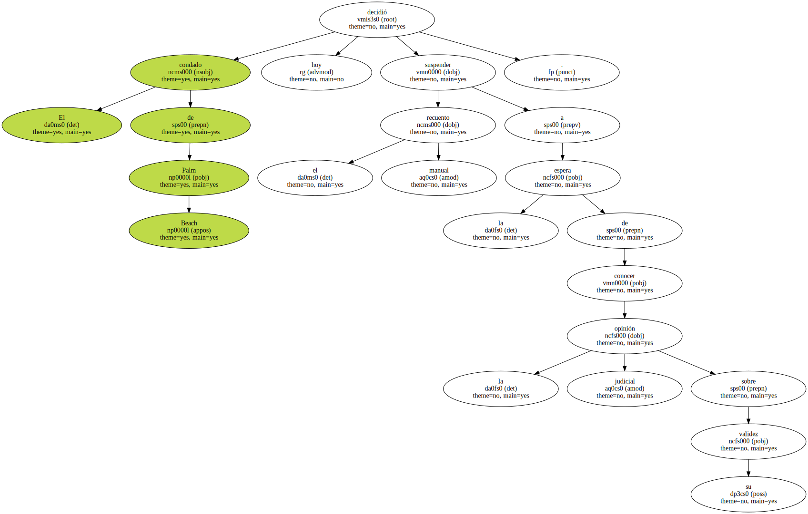

George W. Bush propuso hoy , por medio de James Baker , un compromiso para acabar con la crisis actual por el que los republicanos aceptarían el recuento manual que se efectúe hasta las 22.00 GMT de hoy , martes , en Florida.
Baker dijo que si los demócratas aceptan esta propuesta , los republicanos se comprometen a cambio a retirar las demandas judiciales porque " ya es hora de acabar con la crisis ".
Agregó que Bush acepta los recuentos manuales ya efectuados y los que se pueden hacer hasta las 22.00 GMT de hoy.

Este recuento y el que se haga con los sufragios enviados por correo sería el que determinaría finalmente el resultado de las elecciones en Florida.
Baker indicó que los republicanos no tienen ninguna garantía de que los votos por correo favorecerán a Bush y señaló que los demócratas deben aceptar también retirar todas las demandas judiciales.
El plazo para recibir los votos por correo vence en la medianoche del viernes y , si no hay recuentos manuales , el resultado final de las elecciones de Florida y , en consecuencia , el nombre del nuevo presidente de EEUU se podría conocer el sábado.
El ex secretario de Estado acusó a Gore de tratar de llevar a cabo un " selectivo " recuento manual en unos condados de mayoría demócrata.
" Los demócratas están más preocupados en la selectividad en el recuento que por la limpieza " , afirmó Baker.
Agregó que sería una " locura " llevar a cabo un recuento manual en todos los condados de Florida y citó la incertidumbre existente en el país y en los mercados internacionales.
Todo apunta a que la oferta de Baker será rechazada por los demócratas , ya que están a la espera de la decisión de un juez sobre la demanda que pide ampliar el plazo de las 22.00 GMT de hoy para la entrega oficial de los resultados de los condados.
El condado de Palm Beach decidió hoy suspender el recuento manual a la espera de conocer la opinión judicial sobre su validez.
A la espera de las decisiones de los jueces , Estados Unidos vuelve hoy a vivir una jornada pendiente de lo que ocurre en Florida en los diferentes frentes : tanto en la capital del estado , Tallahassee , como en los condados donde estaba previsto hacer un recuento manual de los sufragios.